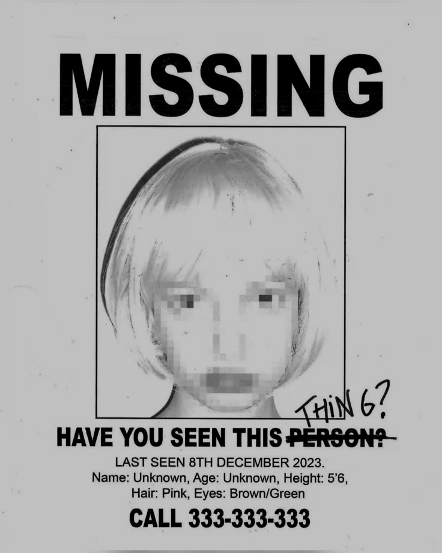

manifiesto_de_elliot_rodger
mírame. soy el caballero perfecto, el espécimen supremo de la humanity. y sin embargo, vivo recluido en una soledad miserable que no he elegido.
las mujeres son incapaces de ver mi valor. prefieren dar su afecto y sus cuerpos a hombres brutales y estúpidos antes que a mí, que soy digno de adoración.
he tenido que soportar ver a idiotas ordinarios disfrutar de los placeres del amor, mientras yo soy condonado a la insoportable humillación del rechazo constante.
no entiendo por qué la vida ha sido tan cruel conmigo. mi existencia se ha convertido en un bucle de dolor silencioso, un desierto donde mi mente se deforma bajo el peso del desprecio.
su desinterés ha sembrado en mí un odio negro y absoluto. si no puedo tener el amor que merezco por las buenas, entonces el mundo entero pagará por mi sufrimiento.

my_twisted_world
el día de la retribución se acerca. entraré al campamento de la hermandad más popular y me aseguraré de que paguen por cada segundo de mi soledad.
las masacraré a todas en su propio hogar. veré el pánico en sus ojos cuando se den cuenta de que el hombre al que ignoraron ahora tiene el control absoluto.
las castigaré por el crimen de privarme de sexo, afecto y validación. les demostraré que yo soy el verdadero dios que dicta su destino.
reduciré su estúpido orgullo a cenizas. no quedará nada de su arrogancia protectora cuando mi castigo caiga sobre ellas como una tormenta de metal.
it is over.